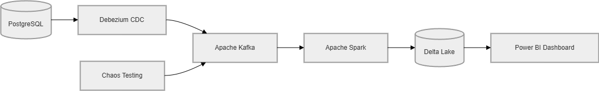
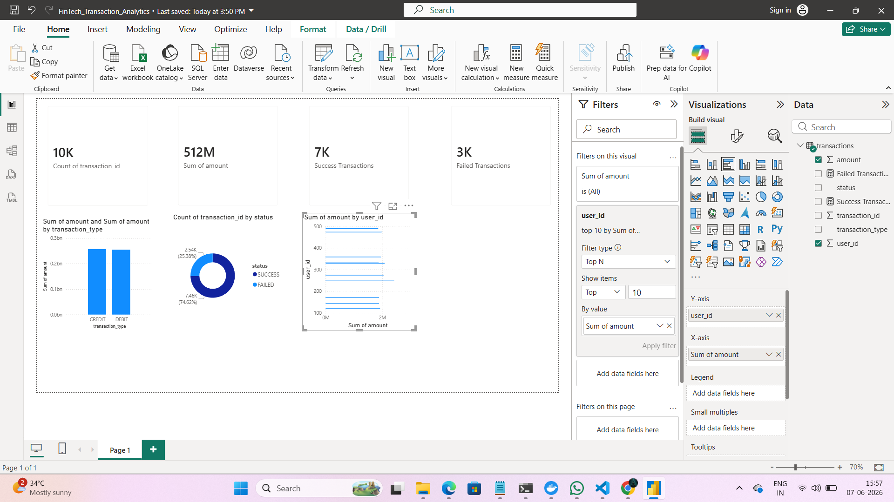

CDC Financial Ledger
Real-Time Financial Transaction Analytics Pipeline

Technology Stack
- PostgreSQL
- Debezium CDC
- Apache Kafka
- Apache Spark
- Delta Lake
- Power BI
- Docker
Project Features
- Real-Time Change Data Capture
- Kafka Event Streaming
- Financial Transaction Analytics
- Power BI Dashboard
- Chaos Engineering Tests
Dashboard
